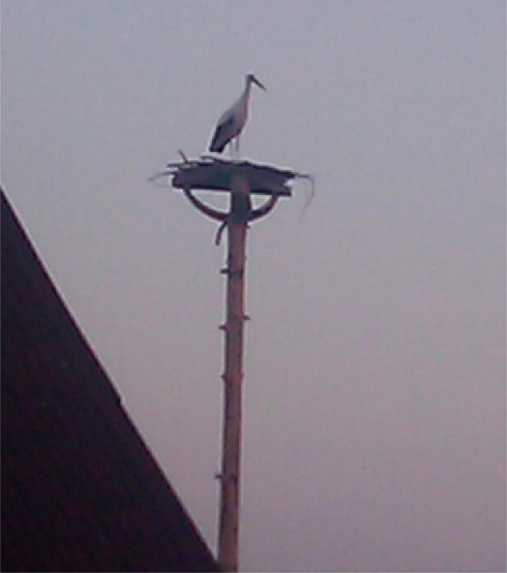

Сюда попало то, что автору показалось удивительным, необъяснимым или просто смешным.
Например, установил я однажды гнездо для аиста. Аист прилетел почти сразу. Это его фото. Три ночи провел на гнезде. Правда, больше не прилетал.
Но, через некоторое время появились трое новых членов семьи. В виде младенцев.
Касается не Волосовского района конкретно, скорее Ингерманландии.
Чертовщинки разные.